It took me a pretty long time to really get git. As we’ve continued to use git more and more in our company, we’ve found ourselves having to teach people what it is and why we use it over and over again, and the reality is that git generally has a pretty steep learning curve compared to some other systems. I’ve seen case after case of developers who love git after they finally understand it, but getting to that point is often somewhat painstaking.
This book then is aimed at the developer who does not particularly like SVN or whatever SCM system they are currently using, has heard good things about git, but doesn’t know where to start or why it’s so wonderful. It is meant to explain git as simply and graphically as possible in a clean, concise, easily readable volume. I would like you to be able to get through this book and understand git at a fundamental level, very quickly.
To accomplish this, I’m starting the book out (after the introduction) with a section about what git does, rather than how to use it. I found that I didn’t really understand git and had many problems in using it until I understood what it was doing rather than understanding it as a different, weird SVN-like system.
todo. clean up this whole section, and actually run through each of these (yes, even windows!)
Before we can start playing with git, we’ll have to install it. I’ll quickly cover installing git on Linux, Mac and Windows.
You can download git from http://git.or.cz/
http://kernel.org/pub/software/scm/git/
wget http://kernel.org/pub/software/scm/git/git-1.5.4.4.tar.bz2 tar jxpvf git-1.5.4.4.tar.bz2 cd git-1.5.4.4 make prefix=/usr all doc info sudo make prefix=/usr install install-doc install-info
or : apt-get git-core, yum install git-core
You are likely going to want to install git without the asciidoc dependency because it is a pain to install. When you compile from source, you will see
There are some requirements you’ll have to install before you can compile git.
http://sourceforge.net/projects/expat/
However, if you want an easier path, you can use the excellent MacPorts software:
http://www.macports.org/
and just run
All the requirements are installed with the developer CD, so you can just download source and compile pretty easily if the developer tools are installed.
MacPorts is also an easy option if you have that installed.
Cygwin http://www.cygwin.com/setup.exe
http://code.google.com/p/msysgit/
A TortoiseCVS lookalike for Git
http://repo.or.cz/w/git-cheetah.git/
Git started with Linus Torvalds scratching the very serious itch of needing a fast, efficient and massively distributed source code management system for Linux kernel development.
The kernel team had moved from a patch emailing system to the proprietary BitKeeper SCM in 2002. That ended in April 2005 when BitMover stopped providing a free version of it’s tool to the open source community because they felt some developers had reverse engineered it in violation of the license.
Since Linus had (and still has) a passionate dislike of all existing source code management systems, he decided to write his own. Thus, in April of 2005, Git was born. A few months later, in July, maintenance was turned over to Junio Hamano, who has maintained the project ever since.
note. “I’m an egotistical bastard, and I name all my projects after myself. First Linux, now git.” – Linus
Git started out as a collection of lower level functions used in various combinations by perl scripts. Recently (since 1.0), more and more of the perl scripts have been re-written in C, increasing portability and speed.
todo. growth and adoption – list some projects (kernel, X.Org, Mesa3D, Compiz, Wine, OLPC, Fedora, Samba | ruby: rubinius, merb, god, github, rails?)
http://git.fedoraproject.org/git/
In this section, we will go over what git was built for and how it works, hopefully laying the groundwork to properly understand what it is doing when we run the commands.
When I learned Git, as many people do, I learned it in the context of other SCMs I had used – Subversion or CVS. I really think this is a horrible way to learn Git. I felt far more comfortable with it when I stopped thinking that ‘git add’ was sort of like ‘svn add’, but instead understood what it was actually doing. Then I found I could find new and interesting ways to use what is really a very powerful and cool toolset.
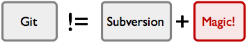
So, let’s see what it’s doing behind the scenes first.
Git is a stupid content tracker. That is probably the best description of it – don’t think of it in a ‘like SVN, but…’ context, but more like a really interesting file system.
Git tracks content – files and directories. It is at it’s heart a collection of simple tools that implement a tree history storage and directory content management system. It is simply used as an SCM, not really designed as one.
“In many ways you can just see git as a filesystem — it’s content-addressable, and it has a notion of versioning, but I really really designed it coming at the problem from the viewpoint of a filesystem person (hey, kernels is what I do), and I actually have absolutely zero interest in creating a traditional SCM system.” – Linus (http://marc.info/?l=linux-kernel&m=111314792424707)
When most SCMs store a new version of a project, they store the code delta or diff. When Git stores a new version of a project, it stores a new tree – a bunch of blobs of content and a collection of pointers that can be expanded back out into a full directory of content and subdirectories. If you want a diff between two versions, it doesn’t add up all the deltas, it simply looks at the two full directories and runs a new diff on them.
This is what fundamentally allows the system to be easily distributed – it doesn’t have issues figuring out how to apply a complex series of deltas, it simply transfers all the directories that one user has and another does not have but is requesting. It is efficient about it – it only stores identical files and directories once and it can compress and transfer it’s content using delta-compressed packfiles – but in concept, it is a very simple beast. Git is at it’s heart very stupid simple.
There are a number of areas that the developers of Git, including and especially Linus, have focused on in conceiving and building Git.
branching and merging
local copy of the entire development history, no central repository
seriously faster than nearly all other SCM systems for most operations.
todo. table of speed benchmarks for git vs. svn vs. ?? – add, commit, push, diff, merge – directory/checkout sizes?
Following the Unix tradition, Git is a collection of many small tools written in C [1]
todo. expand this whole chapter
There are four main object types in git, the first three being the most important to really understand the main functions of git.
All of these types of objects are stored in the git object database, which is kept in the git directory [see git directory]. Each object is compressed (with Zlib) and referenced by the SHA1 value of its contents plus a small header. In the examples, I will use the first 6 characters of the SHA for simplicity, but the actual value is 40 characters long.
To demonstrate these examples, we will develop a small ruby library that provides very simple bindings to git, keeping the project in a git repository. The basic layout of the project is this:
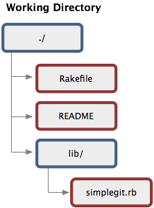
Let’s take a look at what git does when this is committed to a repository.
sidebar of git object sha algorithm (git-object-sidebar.textile)
In git, the contents of files are stored as blobs.
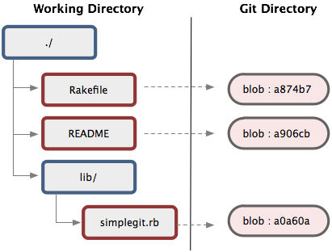
It is important to note that it is the contents that are stored, not the files. The names and permissions of the files are not stored with the blob, just the contents.
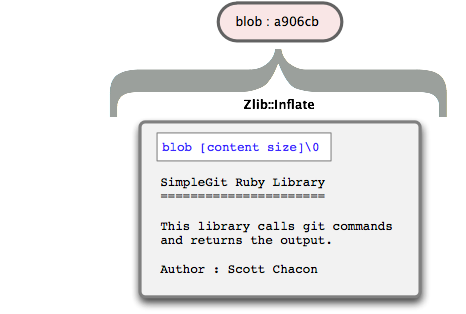
This means that if you have two files anywhere in your project that are exactly the same, even if they have different names, git will only store the blob once. This also means that during repository transfers, such as clones or fetches, git will only transfer the blob once, then expand it out into multiple files upon checkout.
sidebar of tree object encoding algorithm (git-tree-sidebar.textile)
Directories in git basically correspond to trees.
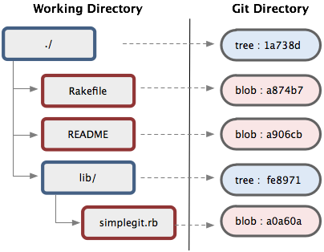
A tree is a list of trees and blobs that the tree contains, along with the names and permissions of those blobs and trees. The contents section of a tree object consists of a very simple text file that lists the mode, type, name and sha of each entry (see the sidebar for details).
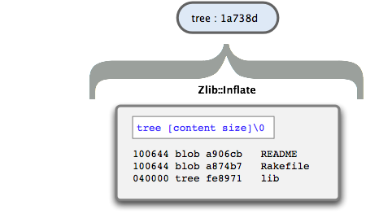
So, now that we can store arbitrary trees of content in Git, where does the ‘history’ part of ‘tree history storage system’ come in? The answer is the commit object.
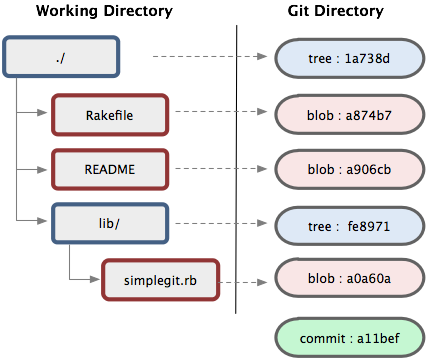
The commit is very simple, much like the tree. It simply points to a tree and keeps an author, committer, message and any parent commits that directly preceded it.
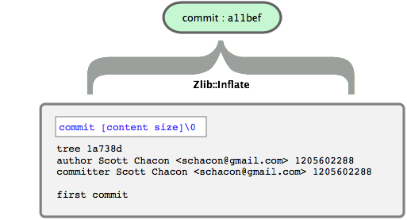
Since this was my first commit, there are no parents. If I commit a second time, the commit object will look more like this:
Notice how the parent in that commit is the same SHA1 value of the last commit we did? Most times a commit will only have a single parent like that, but if you merge two branches, the next commit will point to both of them.
note. the current record for number of commit parents in the Linux kernel is 12 – 12 branches merged in a single commit
The final type of object you will find in a git database is the tag. This is an object that provides a permanent shorthand name for a particular commit. It contains an object, type, tag, tagger and a message. Normally the type is a ‘commit’ and the object is the sha of the commit you’re tagging. The tag can also be GPG signed, providing cryptographic integrity to a release or version.

We’ll talk a little bit more about tags and how they differ from branches (which also point to commits, but are not stored as objects) in the section on [the git data model], where we’ll pull all of this together into how all these objects relate to each other conceptually.
When you initialize a git repository, either by cloning an existing one or creating a new one, the first thing git does is create a “Git Directory”. This is the directory that stores all the object data, tags, branches, hooks and more. Everything that git permanently stores goes in this single directory. When you clone someone else’s repository, it basically just copies the contents of this directory to your computer. Without a checkout (called a “working directory”) this is called a “bare” git repo and moving it to another computer backs up your entire project history. It is the soul of git.
When you run ‘git init’ to initialize your repository, the git directory is by default installed in your current working directory as ’.git’. This can be overridden with the GIT_DIR environment variable at any time. In fact, the git directory does not need to be in your source tree at all. It’s perfectly acceptable to keep all your git directories in a central place (/opt/git/myproject.git) and just make sure to set the GIT_DIR variable when you switch projects you are working on (/home/username/projects/myproject).
The git directory for our little project looks something like this:
code. simple-git-dir-tree.txt
For more in depth information on the git directory layout, see the git repository layout docs.
For now, let’s go over some of the more important contents of this directory.
This is the main git configuration file. It keeps your project specific git options, such as your remotes, push configurations, tracking branches and more. Your configuration will be loaded first from this file, then from a /.gitconfig file and then from an /etc/gitconfig file, if they exist.
Here is an example of what a config file might look like:
code. config-example.txt
See [config section] for more information on available configuration options.
This is the default location of the ‘index’ file for your git project. This location can be overridden with the GIT_INDEX environment variable, which is sometimes useful for temporary tree operations. See [the index] or [advanced index operations] sections for more information on the git index.
This is the main directory that holds the data of your git objects and pack files – that is, all the contents of the files you have ever checked in, plus your commit, tree and tag objects.
The files are stored by their SHA1 values. The first two characters make up the subdirectory and the last 38 is the filename. For example, if the SHA for a blob we’ve checked in was
code. a576fac355dd17e39fd2671b010e36299f713b4d
the file we would find the Zlib compressed contents in is
code. [GIT_DIR]/objects/a5/76fac355dd17e39fd2671b010e36299f713b4d
This directory normally has three subdirectories in it – heads, remotes and tags. Each of these directories will hold files that correspond to your local branches, remote branches and tags, respectively.
For example, if you create a ‘development’ branch, the file .git/refs/heads/development will be created and will contain the sha of the commit that is the latest commit of that branch.
This file holds a reference to the branch you are currently on. This basically tells git what to use as the parent of your next commit. The contents of it will generally look like this:
code. ref: refs/heads/master
This directory contains shell scripts that are invoked after the git commands they are named after. For example, after you run a commit, git will try to execute the post-commit script, if it has executable permissions.
See [hooks section] or the online hooks documentation for more information on what you can do with hooks.
In computer science speak, the Git object data store is a Directed Acyclic Graph. That is, starting at any commit you can traverse it’s parents in one direction and there is no chain that begins and ends with the same object.
All commit objects point to a tree and optionally to previous commits. All trees point to one or many blobs and/or trees. Given this simple model, we can store and retrieve vast histories of complex trees of arbitrarily changing content quickly and efficiently.
This section is meant to demonstrate how that model looks.
In addition to the Git objects, which are immutable – that is, they cannot ever be changed, there are references also stored in Git. Unlike the objects, references can constantly change. They are simple pointers to a particular commit, something like a tag, but easily moveable.
Examples of references are branches and remotes. A branch in git is nothing more than a file in the .git/refs/heads/ directory that contains the sha of the most recent commit of that branch. To branch that line of development, all git does is create a new file in that directory that points to the same sha. Then, as you continue to commit, one of the branches will keep changing to point to the new commit shas, while the other one can stay where it was.
The basic data model I’ve been explaining looks something like this:
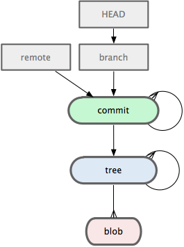
The cheap references I’ve represented as the grey boxes, the immutable objects are the colored round cornered boxes.
Lets look at an example of simple usage of git and which objects are stored in the git object store as we go.
To begin with, we commit an initial tree of three files and two subdirectories, each directory with one file in it. Possibly something like this:
code. model-tree-example.txt
When we first commit this tree, our Git model may look something like this:
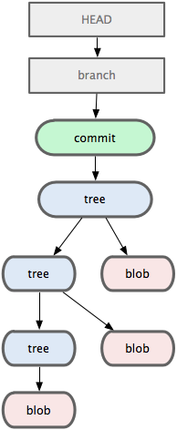
We have 3 trees, 3 blobs, 1 commit that points to the top of the tree, the current branch pointing to our last commit and the HEAD file pointing to the branch we’re currently on to let Git know which commit will be the parent for the next commit.
Now let’s assume that we change the lib/base/base_include.rb file and commit again. At this point, a new blob is added, which changes the tree that points to it, which changes the tree that points to that tree and so on to the top of the entire directory. Then a new commit object is added which points to it’s parent and the new tree and the branch reference is moved forward.
Let’s also say at this point we tag this commit as a release, which adds a new tag object. At this point, we’ll have the following in Git.
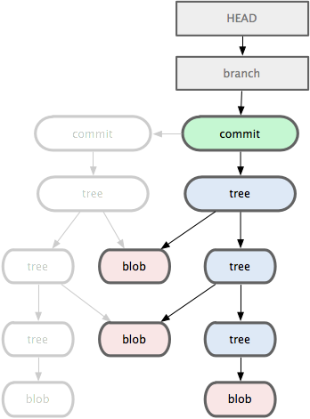
Notice how the other two blobs that were not changed were not added again. The new trees that were added point to the same blobs in the data store that the previous trees pointed to.
Now let’s say we modify the init.rb file at the base of the project. The new blob will have to be added, which will add a new top tree, but all the subtrees will not be modified, so Git will re-use those references. Again, the branch reference will move forward and the new commit will point to it’s parent.
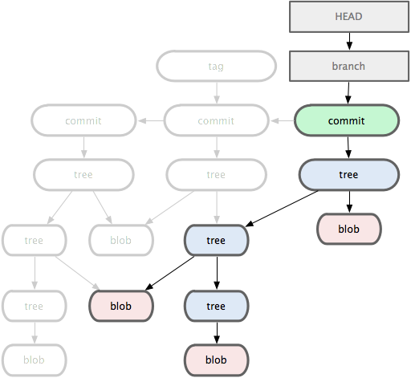
At this point, let’s stop to look at the objects we now have in our repository. From this, we can easily recreate any of the three directories we committed by following the graph from the commit object.
For instance, if we wanted the first tree, we could look for the parent of the parent of the HEAD, or the parent of the tag. If we wanted the second tree, we could ask for the commit pointed to by the tag, and so on.
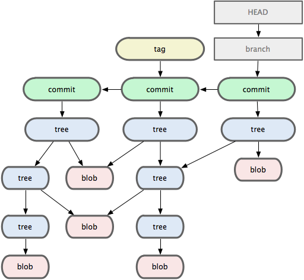
So, to keep all the information and history on the three versions of this tree, git stores 16 immutable, signed, compressed objects.
So, what do all the arrows in these illustrations really mean? How does Git actually retrieve these objects in practice? Well, it gets the initial SHA of the starting commit object by looking in the .git/refs directory for the branch, tag or remote you specify. Then it traverses the objects by walking the trees one by one, checking out the blobs under the names listed.
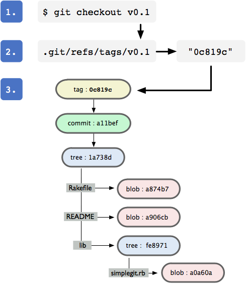
Now, let’s see how git handles branching, fetching and merging operations, data-wise.
For the following illustrations, we will represent the entire tree and the commit it points to as a single object.
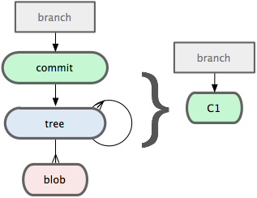
Let’s say we work on a project for a while, then we get an idea for something that may not work out, but we want to do a quick proof-of-concept. We create a new branch called ‘experiment’ off of our main branch, which is by convention called ‘master’. We then switch to the new branch, then create a few commits.
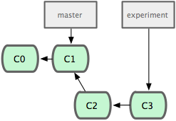
Then, our boss comes in and says we need a hot fix to production. So we switch back to our master branch, make the change, push the release and then tag the commit with the release number. Then we go back to our ‘experiment’ branch, continue working and commit again.
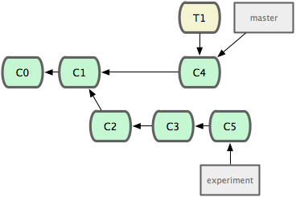
At this point, we show the new branch to our co-workers and everyone likes the new changes. We decide we want to merge them back into our main branch, so we merge the changes and delete our ‘experiment’ branch.
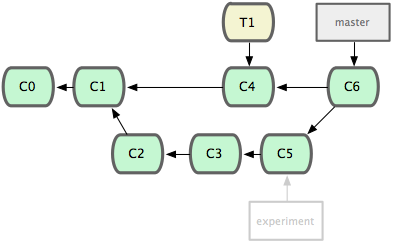
Now lets take a look at remotes. Remotes are basically other peoples branches of the same repository. If you got your repository by cloning it, rather than initializing it, you should have a remote branch of where you copied it from automatically added as ‘origin’ by default. Which means the tree that was checked out during your initial clone would be referenced as ‘origin/master’, which means ‘the master branch of the origin remote’.
Lets say you clone someone’s repository and make a few changes. You would have two references, one to ‘origin/master’ which points to where the master branch was on the persons repository you cloned from when you did so, and a ‘master’ branch that points the most recent local commit.
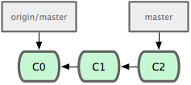
Now lets say you run a fetch. A fetch pulls all the refs and objects that you don’t already have from the remote repository you specify. By default, it is origin, but you can name your remotes anything, and you can have more than one. Lets say we fetch from the repository that we originally cloned from and they had been doing some work. They have now committed a few times on their master branch, but they also branched off at one point to try an idea, and they named the branch ‘idea’ locally. We now have access to those changes as ‘origin/idea’.
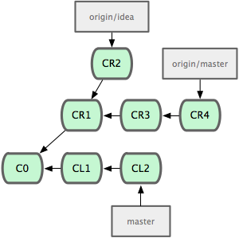
We look at the ‘idea’ branch and like where they’re going with it, but we also want the changes they’ve made on their master branch, so we do a 3-way merge of their two branches and our master. We don’t know how well this is going to work, so we make a ‘tryidea’ branch first and then do the merge there.
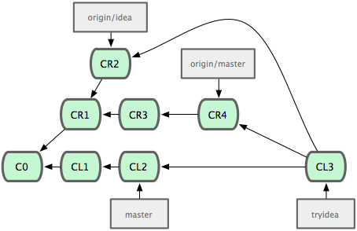
Now we can run our tests and merge back into our master branch if we want. Then we can tell our friend we cloned from to fetch from our repository, where we’ve merged their two branches for them and integrated some of our changes as well. They can choose to accept or reject that “patch”.
Let’s say you and another developer, Jen, are working on the same project simultaneously. She clones from you, and works for a while and commits. You have committed in the meantime and want to get your work in sync, so you add her repository as the remote ‘jen’, do a fetch and merge her changes in, creating a new merge commit. (All commits that are simply merges are given a darker color in this example)
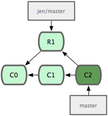
At this point, you both do work and commit changes and then you fetch and merge from her again. Then she does another commit and you fetch and merge once more. At this point, you’ll have a commit history that looks something like this:
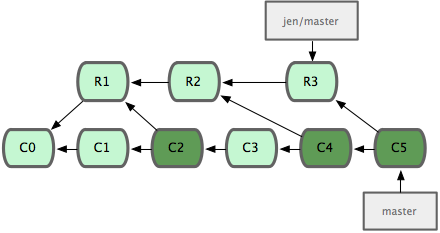
Perfectly fine, but it can get a little confusing when you litter the history with all those commits that do nothing but merge unshared changes. The longer you keep out of sync, the worse this can get.
This is where the rebasing command comes in. With rebase, git will checkout the upstream branch, in this case, Jen’s master branch, and then replay all the changes you’ve done since you forked on top of those file, as if you had forked your work off at that point and done all your changes, rather than earlier.
Rebase will literally produce a series of patch files of your work and start applying them to the upstream branch, automatically making new commits with the same messages as before and orphaning your older ones. Git will automatically remove these eventually, since nothing points to them, when you run the garbage collector (see git-gc).
So let’s see what happens if we rebase rather than merge in the same scenario. Here we have our first merge and we can see that it orphans Commit 1 and applies the changes between Commit 0 and Commit 1 to the files in Remote Commit 1, creating a new Commit 2.
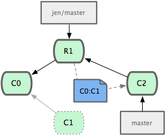
Then, as you’ll remember, you and Jen both commit again. You’ll notice that now it looks like she cloned you and committed and then you changed that code, rather than you both working at the same time and merging.
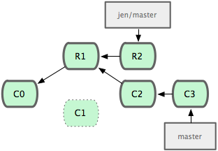
At this point, instead of merging two more times like we did originally, we rebase the next two commits she makes.
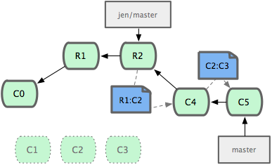

And finally, we are left with a commit history that looks like Figure 1, rather than Figure 2, which is what we would have if we had merged instead.
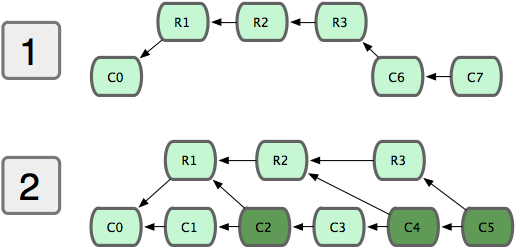
note. You should remember to only do this on local branches before you push or on repositories that nobody has fetch access to – if anyone pulls down the objects that will become abandoned during a rebase, it gets a bit frustrating.
Besides branch heads, there are a number of shorthand ways to refer to particular objects in the Git data store. These are often referred to as a treeish. Any Git command that takes an object – be it a commit, tree or blob – as an argument can take one of these shorthand versions as well.
I will list here the most common, but please read the rev-parse command for full descriptions of all the available syntaxes.
code. dae86e1950b1277e545cee180551750029cfe735
You can always list out the entire SHA1 value of the object to reference it. This is sometimes easy if you’re copying and pasting values from a tree listing or some other command.
code. dae86e
Just about anything you can reference with the full SHA can be referenced fine with the first 6 or 7 characters. Even though the SHA is always 40 characters long, it’s very uncommon for more than the first few to actually be the same. Git is smart enough to figure out a partial SHA as long as it’s unique.
code. master
Anything in .git/refs/heads or .git/refs/tags can be used to refer to the commit it points to.
code. master@{yesterday} master@{1 month ago}
This example would refer to the value of that branch yesterday. Git will go through the commit parents until it found one that matched that date.
code. master@{5}
This indicates the 5th prior value of the master branch. Like the Date Spec, this depends on special files in the .git/log directory that are written during commits.
code. e65s462 master2
This refers to the Nth parent of that commit. This is only really helpful for commits that merged two or more commits – it is how you can refer to a commit other than the first parent.
code. e65s465
The tilde character, followed by a number, refers to the Nth generation grandparent of that commit. To clarify from the carrot, this is the equivalent commit in carrot syntax:
code. e65s46^^
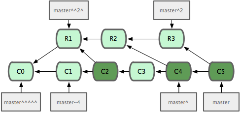
code. e65s46{tree}
This points to the tree of that commit. Any time you add a ^{tree} to any commit-ish, it resolves to it’s tree.
code. master:/path/to/file
This is very helpful for referring to a blob under a particular commit or tree.
The working directory is the checkout of the current branch you are working on. What is really important to note here is that this code is a working copy – it is not really important.
This is something that developers from the Subversion world have a hard time understanding and tends to scare them mightily. If you check out a different branch, git will basically make your working directory look like that branch, removing any checked in content that is currently in your working directory that is not in the new tree.
note. the files in your working directory are temporary, they are not your repository!
Most long time Subversion users don’t like to see content automatically removed from their directories, but that’s one of the mental shifts you’ll need to make. Your working directory is temporary – everything is stored permanently in your git repository. Your working directory is just a copy of a tree so you can edit it and commit changes.
The index was called the cache for a while, because that’s largely what it does. It is a staging area for changes that are made to files or trees that are not committed to your repository yet. It is also used to speed up some operations. It acts as sort of a middle ground between your working directory and your repository.
I keep saying that Git is primarily a content tracking system with an SCM tools built on top of it. So, if it’s not built specifically to be an SCM, perhaps it would be useful to see some other examples of things it might be good for.
(uses for slowly changing distributed trees)
Imagine you have a network of …
http://gittorrent.utsl.gen.nz/rfc.html
replication, search w/grep, no history loss
(offline writing) Branches, merges – distributed, adhoc documentation, book writing (git-wiki)
(offline working on tickets) (http://www.distract.wellquite.org/ Monotone) (http://bugseverywhere.org/be/show/HomePage)
Let’s say you want to build something like a distributed Time-Machine (Apple all rights reserved).
(http://eigenclass.org/hiki/gibak-backup-system-introduction)
Now that you understand what Git does at a fundamental level – how it tracks and stores content, how it stores branches and merges and tracks remote copies of the repository, let’s see how to actually use it.
There are two major ways you will get a Git repository – you will either clone an existing project, or you will initialize a new one.
To create a new Git repository somewhere, simply go to the directory you want to add to version control and type
shell. git init
This will create a .git directory in your current working directory that is entirely empty. If you have existing files you want to add to your new repository, type
shell. git add . git commit -m ‘my first commit’
This will add all of your current files into your new repository and index and then create your first commit object, pointing your new ‘master’ branch to it. Congratulations, you have now added your source code to Git.
(git init, git commit, git add)
Many times you will be cloning a repository, however. This means that you are creating a complete copy of another repo, including all of it’s history and published branches.
In order to do this, you simply need a URL that has a git repository hosted there, which can be over http, https, ssh or the special git protocol. We will use the public hosted repository of the simple library I mentioned at the beginning of the book.
shell. git clone git://github.com/schacon/simplegit.git
This will by default create a new directory called ‘simplegit’ and do an initial checkout of the ‘master’ branch. If you want to put it in a different directory, you can specify that on the command line, too.
shell. git clone git://github.com/schacon/simplegit.git my_directory
Now that we have our repository, let’s go through some normal workflow examples of a single person developing.
First off, we will often want Git to automatically ignore certain files – often ones that are automatically generated during our development. For example, in Rails development we often want to ignore the log files, the production specific configuration files, etc. To do this, we can add patterns into the .gitignore file to tell Git that we don’t want it to track them.
Here is an example .gitignore file.
code. gitignore.txt
Now we’ll do some development and periodically commit our changes. We have a few options here – we can commit individual files or we can tell the commit command to automatically add all modified files in our working directory to the commit.
A good way to find out what you’re about to commit is to use the ‘status’ command.
shell. git-status.txt
In this example, I can see that I’ve modified three files in my tree, but none of them have been added to the index yet – they are not staged and ready to be committed. If I want to make these changes in two seperate commits, or I have completed work on some of them and would like to push that out, I can specify which files to add individually and then commit.
shell. git-add-status.txt
You can see that if we commit at this point, only the Rakefile will show up as changed in the commit.
If we want to commit all our changes, we can use this shorthand:
shell. $> git commit -a -m ‘committing all changes’
If you would like to give a more useful commit message, you can leave out the ‘-m’ option. That will fire up your $EDITOR to add your commit message.
note. Give special care to the first line of your commit message – it will often be the only thing people see when they are looking through your commit history.
Now we can continue this loop – modifying, adding and committing – during our development.
So, now we have all this history in our Git repository. So what? What can we do with it? How can we see this history?
The answer is the very powerful git log command. The ‘log’ command will show you your commit history
code. git-log.txt
code. git-log-oneline.txt
(git log)
show, ls-tree, cat-file -p
diff – getting and sending patchfiles
branch, checkout reset git branch recovered-branch 7281251ddd
git clone—bare; scp
git daemon—detach
git update-server-info
rebase—interactive
Here are some references that I used or that you may use to find out more about Git.
Main Git Documentation - fantastic reference for all the command line programs
Git for Computer Scientists - good detail about the DAG object model
Junio Hamano New Git Maintainer - some history on git and Junio becoming the new maintainer